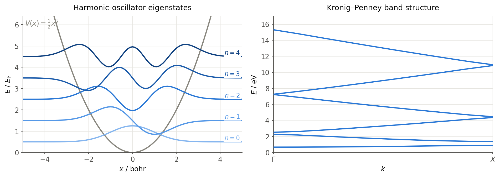

Numerov.jl
Numerov.jl solves the time-independent Schrödinger equation on 1D, 2D and 3D grid potentials — for example, vibrational eigenstates of molecules on potential-energy surfaces from electronic-structure calculations, or periodic model systems with k-point sampling and band structures along paths through the high-symmetry points of the Brillouin zone.
Under the hood, the Hamiltonian is discretized with high-order finite-difference (Numerov-type) stencils, assembled as a sparse matrix and diagonalized with iterative eigensolvers (Arpack, KrylovKit) or a dense LU-based solver.

Left: the five lowest eigenstates of a 1D harmonic oscillator, computed from examples/1DHarmonicOscillator. Right: the band structure of a 1D Kronig-Penney model from examples/1DKronigPenney.
Installation
Requires Julia 1.10 or later. Numerov.jl is registered in the Julia General registry:
pkg> add NumerovQuickstart
Numerov.jl has a single entry point: the exported function numerov reads an input file, solves the Schrödinger equation and writes all result files to the current working directory. On invalid input it throws a catchable ArgumentError rather than terminating Julia.
julia> using Numerov
julia> numerov("input.in")The input file names a grid-potential file and sets calculation options — see the input file reference. Ready-to-run cases live in the examples/ directory of the repository, and a command-line interface is available as well.
Output files
All output files are written to the current working directory; existing files with the same names are overwritten on each run (eigenvalues.dat is deleted as soon as a run starts, since it is appended to per k-point).
| File | Content | Written |
|---|---|---|
Numerov.out | Log file: input parsing, system and sparse-matrix information (name configurable via output-file) | always |
eigenvalues.dat | Eigenvalues in the chosen potential-unit, one line per k-point (k-point columns first for periodic runs) | always |
eigenvectors.dat, eigenvectors_shifted.dat | Coordinates, potential and eigenvector amplitudes per grid point; the shifted variant offsets each eigenvector by its eigenvalue for plotting inside the potential | non-periodic runs |
eigenvectors_k_<k>.dat, eigenvectors_shifted_k_<k>.dat, imag_eigenvectors_k_<k>.dat, imag_eigenvectors_shifted_k_<k>.dat | Real and imaginary parts of the (complex) eigenvectors, one set of files per k-point | periodic/k-point runs |
frequencies.dat (or frequencies_k_<k>.dat) | Transition energies between the computed states as a lower triangular matrix, in cm⁻¹ | always (per k-point for periodic runs) |
bandstructure.dat | Distance along the k-path and the corresponding eigenvalues | only with band-structure = on |
timings.out | Timing breakdown of the calculation (name configurable via timings-file) | always |
Citing
If you use Numerov.jl in your research, please cite the repository — citation metadata is provided in CITATION.cff.